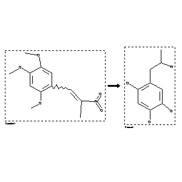

 |
| FA | RX(1); FLST(1); RX(1) |
Reaction (1 of 1)
| Reaction ID | 4304661 |
| Reactant BRN | 1986646 |
| Reactant | 1,2,4-trimethoxy-5-(2-nitro-propenyl)-benzene |
| Product BRN | 2416164 |
| Product | 1-(2,4,5-trihydroxyphenyl)-2-aminopropane |
| No. of Reaction Details | 1 |
Reaction Details (1 of 1)
| Reaction Classification | Preparation |
| Other Conditions | (i) LiAlH4, Et2O, (ii) BBr3, CH2Cl2 |
| Comment | Multistep reaction |
| Citation Pointer | 83865; Journal; Borchardt,R.T. et al.; JMCMAR; J.Med.Chem.; EN; 19; 1976; 1201-1209; |
Reference (1 of 1)
| Citation Number | 83865 |
| Document Type | Journal |
| Authors | Borchardt,R.T. et al. |
| CODEN | JMCMAR |
| Journal Title | J.Med.Chem. |
| Language Code | EN |
| (Series) Volume | 19 |
| Publication Year | 1976 |
| Page | 1201-1209 |